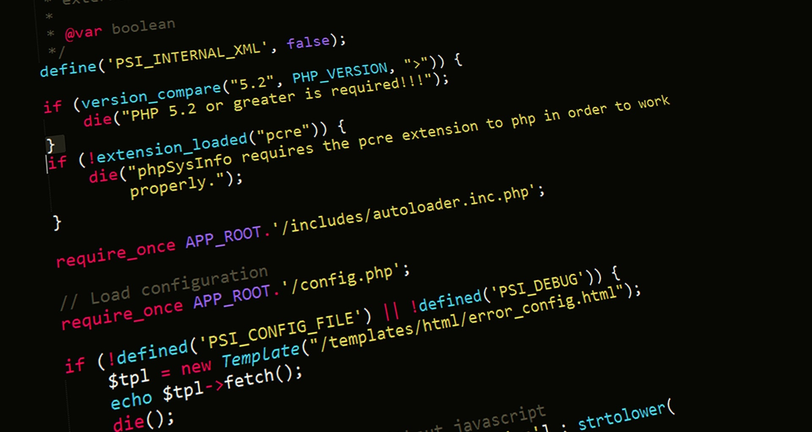

Video Editing
Crafting dynamic cuts, rhythmic pacing, and seamless narrative transitions for long-form content, branded campaigns, and creator videos.
01
Video Editor & Motion Designer crafting dynamic cuts, seamless transitions, and visual stories.


SPECIALIZED POST-PRODUCTION & MOTION SERVICES
Crafting dynamic cuts, rhythmic pacing, and seamless narrative transitions for long-form content, branded campaigns, and creator videos.
Engaging motion typography, 2D/3D visual elements, title reveals, and animated graphics that communicate ideas with clarity.
Immersive audio editing, dialogue cleanup, sound effects, and music mixing that add depth, rhythm, and emotional impact.
Cinematic color treatment, custom LUT development, and tonal refinement to create a consistent and professional visual look.
I’m Ritesh Sinha, a Video Editor & Motion Designer focused on turning ideas and raw footage into engaging, polished visual stories.
With expertise in Adobe Premiere Pro and After Effects, I work across video editing, motion graphics, visual storytelling, and content for brands, creators, and businesses. I focus on strong pacing, clean visuals, purposeful motion, and details that keep viewers engaged.
Whether it’s a brand film, social media content, promotional video, or motion-led visual, my goal is simple — make every frame communicate, connect, and leave an impact.

TOOLS, TECHNIQUES & CREATIVE EXPERTISE
Editorial pacing, narrative structure, clean cuts, transitions, and polished social, commercial, and branded content.
Kinetic typography, logo animation, 2D motion graphics, visual effects, compositing, and micro-animations.
Designing motion systems that add energy, clarity, and personality to video content without overwhelming the story.
Dialogue cleanup, sound effects, music editing, audio transitions, and detailed sound layering to strengthen the viewing experience.
Creating and preparing custom visual assets, thumbnails, compositions, and supporting graphics for video projects.
Using rhythm, timing, shot selection, music, motion, and structure to turn raw footage into engaging visual stories.
In-depth stories, sharper edits, and engaging narratives. These long-form projects showcase my approach to storytelling, pacing, sound design and visual direction.

A quick, high-impact motion graphics piece with bold visuals and smooth transitions.

A data-driven explainer on AI literacy with clean visuals, clear structure and impactful messaging.

A short intro edit for a gut health podcast, with clean visuals and smooth motion.